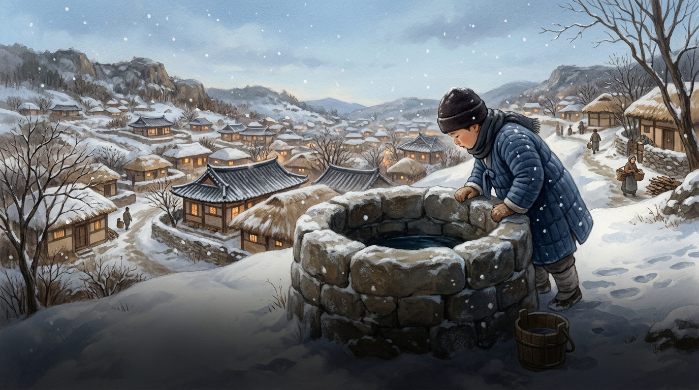
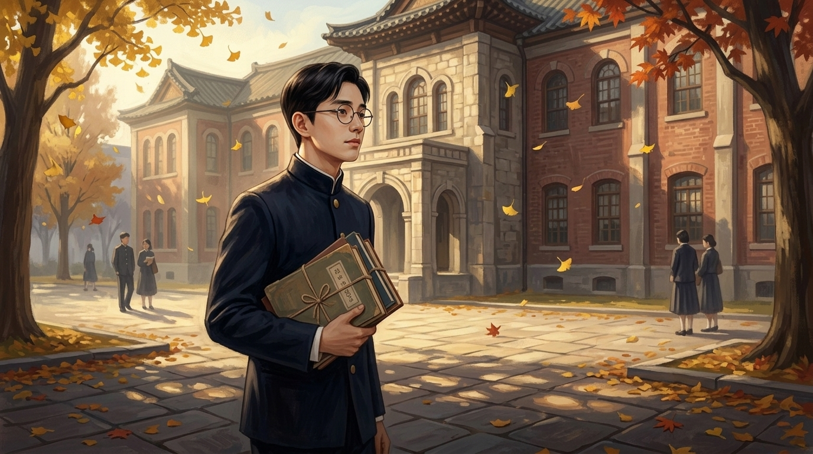
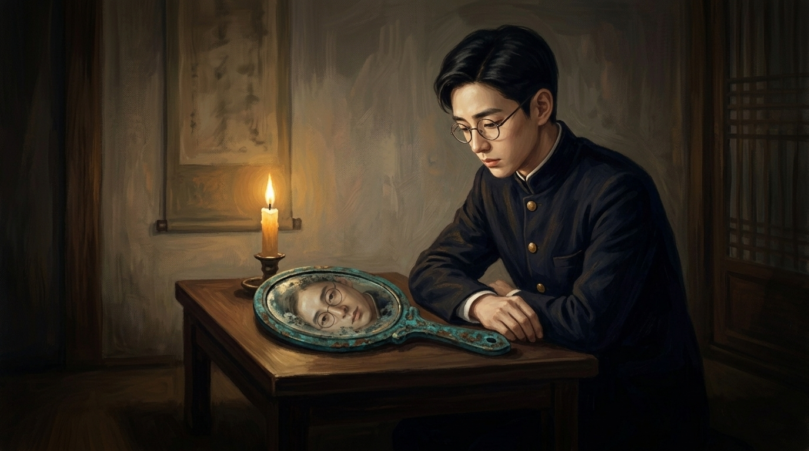
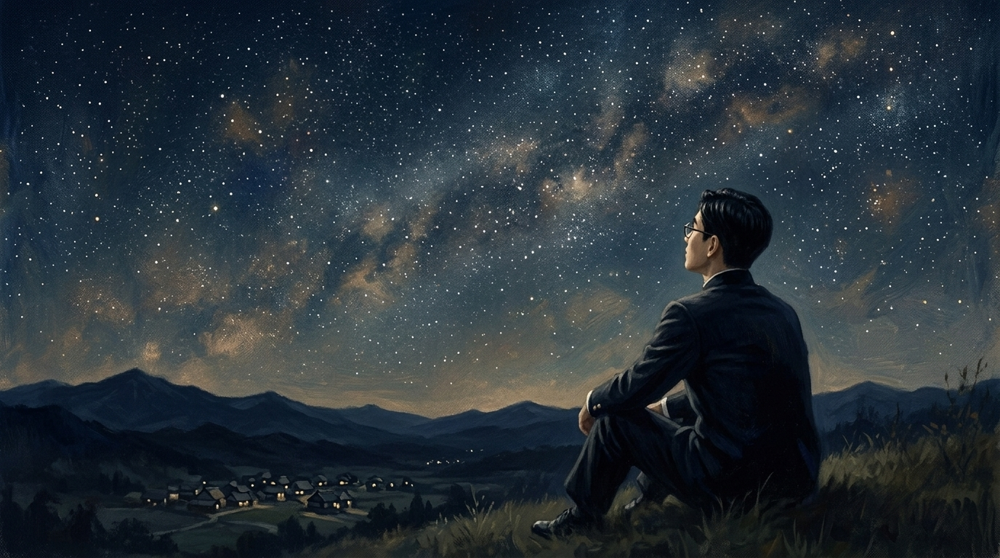
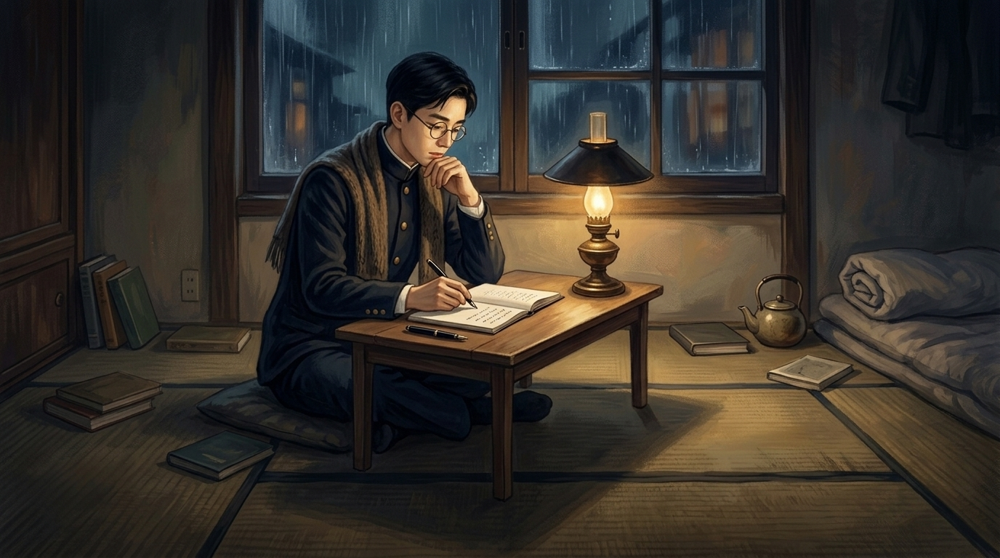
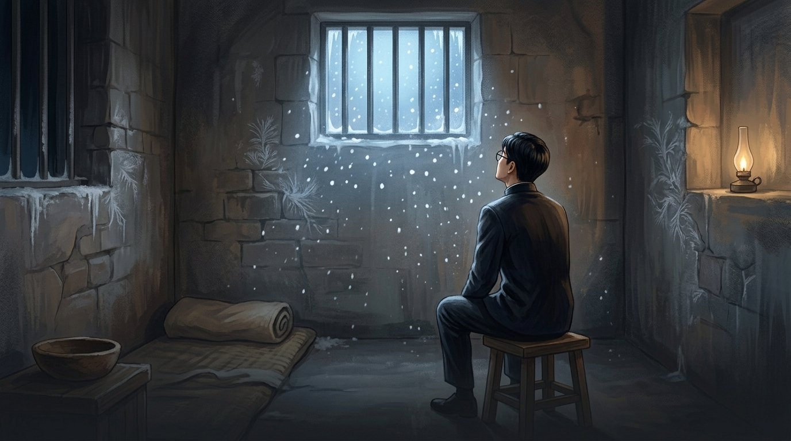

우물 속을 들여다본 소년

1917년 겨울, 윤동주는 두만강 너머 북간도 명동촌에서 태어났다. 조선이 일본에 나라를 빼앗긴 지 일곱 해째 되던 해였다.
명동촌은 고향을 떠나온 조선 사람들이 모여 만든 마을이었다. 교회가 있었고 학교가 있었으며, 사람들은 이 낯선 땅에서도 우리말과 우리글을 잃지 않으려 애썼다. 어린 동주는 그런 마을에서 책을 좋아하는 조용한 아이로 자랐다. 한 살 터울의 고종사촌 송몽규는 평생의 벗이자, 끝내 같은 감옥에서 함께 스러질 동지였다.
그는 자주 혼자였다. 산모퉁이를 돌아 외딴 우물을 들여다보며, 그 안에 비친 자기 얼굴을 미워하고 또 가엾어했다. 미움과 연민 사이를 오가는 이 마음은, 훗날 그의 시 전체를 흐르는 강물이 된다.
연희전문, 시인의 다짐

은진중학과 평양 숭실중학을 거치며 동주는 시를 쓰기 시작했다. 숭실은 일제가 강요한 신사참배를 거부하다 문을 닫았고, 그는 다시 학교를 옮겨야 했다. 신앙과 양심을 지키는 일이 곧 위험이 되던 시대였다.
1938년, 동주는 서울로 올라와 연희전문학교(지금의 연세대학교) 문과에 들어간다. 송몽규도 함께였다. 윤동주의 가장 빛나는 시절이 이곳에서 펼쳐졌다. 그는 우리말로 시를 썼다. 일본어가 '국어'로 강요되고 한국어로 글을 내는 일조차 막히던 때에, 그것은 그 자체로 조용한 저항이었다.
1941년, 그는 그동안 쓴 시 열아홉 편을 모아 『하늘과 바람과 별과 시』라는 시집을 묶는다. 그 첫머리에 놓일 시가 바로 「서시」였다 — 부끄럼 없이 살겠다는, 짧지만 평생을 건 다짐.
거울 앞의 부끄러움

시집은 끝내 출판되지 못했다. 일제의 검열 아래 우리말 시집을 낸다는 것은 너무 위험한 일이라, 주변에서 만류했다. 동주는 원고를 손으로 세 부 베껴 썼다. 한 부는 자신이, 한 부는 스승에게, 한 부는 후배 정병욱에게 맡겼다. 훗날 이 원고가 그를 영원히 살린다.
이 무렵 그의 시는 점점 더 깊은 자기 응시로 향한다. 「참회록」에서 그는 녹슨 구리거울에 비친 자신을 들여다본다. 나라 잃은 백성으로 살아온 스물네 해를 "어느 왕조의 유물"이라 부르며, 그 욕됨을 똑바로 마주한다. 남을 탓하기보다 끊임없이 자기를 들여다보는 일 — 그것이 윤동주의 저항 방식이었다.
별 하나에 어머니, 어머니

객지의 가을밤이면 동주는 하늘을 올려다보았다. 별 하나하나에 그리운 이름을 붙여 불렀다. 소학교 동무들, 이국 소녀들, 가난한 이웃들, 그리고 멀리 북간도에 두고 온 어머니.
「별 헤는 밤」은 그리움의 시이면서, 부끄러움과 희망이 함께 담긴 시다. 그는 별빛 내린 언덕에 자기 이름을 써 보고는 흙으로 덮어 버린다. 부끄러운 이름이라서다. 그러나 시는 절망에서 끝나지 않는다 — 겨울이 지나 봄이 오면, 무덤 위에 잔디가 돋듯 그 이름 묻힌 자리에도 "자랑처럼 풀이 무성하리라"고. 죽음 너머의 부활을 믿는 마음이 거기 있다.
육첩방, 남의 나라에서

1942년, 동주는 바다를 건너 일본으로 유학을 떠난다. 도쿄의 릿쿄대학을 거쳐 교토의 도시샤대학 영문과로 옮겼다. 적국의 한복판에서, 좁은 다다미 여섯 장짜리 방 '육첩방'은 그에게 "남의 나라"였다.
「쉽게 씌어진 시」는 그가 남긴 마지막 시로 알려져 있다. 부모가 보내 준 학비로 늙은 교수의 강의를 들으러 가면서, 그는 묻는다. 세상은 이토록 살기 어려운데 시가 이렇게 쉽게 써지는 것은 부끄러운 일이 아닌가. 그러나 그는 절망에 머물지 않는다. 등불을 밝혀 어둠을 조금 내몰고, "시대처럼 올 아침"을 기다리며, 마침내 자기 자신과 눈물과 위안의 악수를 나눈다.
스물일곱, 별이 된 이름

1943년 여름, 윤동주는 송몽규와 함께 일본 경찰에 체포된다. 조선의 독립을 꿈꾸고 우리말과 우리 문화를 지키려 했다는 것이 죄목이었다. 그는 치안유지법 위반으로 2년 형을 선고받고 후쿠오카 형무소에 갇힌다.
그리고 1945년 2월 16일, 광복을 꼭 여섯 달 앞두고 동주는 차디찬 감옥에서 숨을 거둔다. 스물일곱 살이었다. 정체불명의 주사를 정기적으로 맞았다는 증언이 남아, 생체실험 희생설이 끊이지 않는다. 한 달도 못 되어 송몽규마저 같은 곳에서 뒤를 따랐다.
그의 시는 살아남았다. 후배 정병욱이 어머니에게 맡겨 마룻장 아래 숨겨 두었던 그 원고가, 해방 뒤 1948년 마침내 『하늘과 바람과 별과 시』로 세상에 나온 것이다. 살아서는 시집 한 권 내지 못한 청년은, 죽어서 한국인이 가장 사랑하는 시인이 되었다.